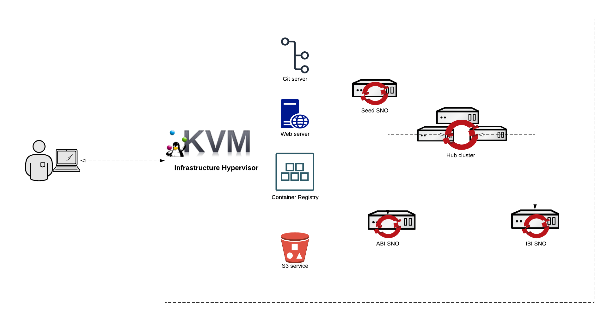
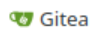
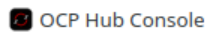
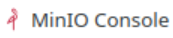

Introduction to the lab environment
Before jumping into the hands-on sections, let’s get familiar with the lab environment we have available and I would recommend taking a second read of the What You Will Achieve section.
The following lab sections rely on having a lab environment accessible in order to do the hands-on work. If you’re a Red Hatter, you can order a lab environment already set up for you on the Red Hat Demo Platform. You just need to order the lab named 5G RAN Deployment on OpenShift. Notice that it has a cost of ~ $56 to run through the lab. When the lab is launched, by default you will have 12 hours to complete it before it is destroyed. The estimated time to finish the lab might look like 12 hours total (2h provisioning time, 5h lab work, 5h margin). If you need further time, it can be manually extended up to 24h in total. If you still need to deploy a lab environment, follow the guide available here.
|
The following image presents a high-level overview of the lab environment:

Git Server
A gitea server is running on the infrastructure host, you can reach it at http://infra.5g-deployment.lab:3000/. You can access through the pre-configured Firefox 
Credentials for the git server.
-
Username:
student -
Password:
student
You will use these credentials to log in to the Gitea WebUI and manage your GitOps repositories.
Container Registry
A container registry is running on the infrastructure host, you can reach it at https://infra.5g-deployment.lab:8443/.
| The mirror registry doesn’t have the WebUI enabled, you can only access it via terminal. |
Credentials for the container registry:
-
Username:
admin -
Password:
r3dh4t1!
These credentials are required for podman login or similar commands when interacting with the mirror registry from the terminal.
If you receive an error message regarding the certificate please re-run update-ca-trust on the hypervisor or add --tls-verify=false to the command line.
|
OpenShift Hub Cluster
An OpenShift cluster is running on the infrastructure host, you can reach it at https://console-openshift-console.apps.hub.5g-deployment.lab and https://api.hub.5g-deployment.lab:6443
You can reach the Hub’s cluster OCP console through the pre-configured Firefox 
Credentials for the OCP cluster:
-
Username:
admin -
Password: The password is randomly generated for each environment. In case you configured the lab yourself, you defined this password.
HTTP Server
An HTTP server is deployed on the infrastructure host to publish the Red Hat CoreOS ISO and Red Hat CoreOS Rootfs images locally. These images are required to deploy the already existing infrastructure and the OpenShift Clusters that will be deployed in our lab. Server can be reached at http://infra.5g-deployment.lab:8080 from the infrastructure host.
S3 Storage Server
An S3 storage server is running on the infrastructure host in order to provide S3 backup and restore capabilities for the image-based upgrade process. You can access the management console at http://infra.5g-deployment.lab:9001/login and through the pre-configured Firefox 
-
Username:
admin -
Password:
admin1234
Access the management console with these credentials to manage S3 buckets for backup and restore operations related to image-based upgrades.
OpenShift Seed SNO Cluster
A Single Node OpenShift cluster is running on the infrastructure host running version v4.20.8 of OpenShift Container Platform. Its main purpose is to act as a dedicated single-node OpenShift cluster that you use to create a seed image and is deployed with the target OpenShift Container Platform version. It aligns with the seed cluster guidelines and includes the software prerequisites for an image-based installation and deployment and the RAN DU profile for a seed image.
Credentials for the seed SNO cluster:
-
Admin kubeconfig: It can be found either in the following path of the infrastructure host: ~/seed-cluster-kubeconfig or it can be downloaded from the RHACM Web Console.